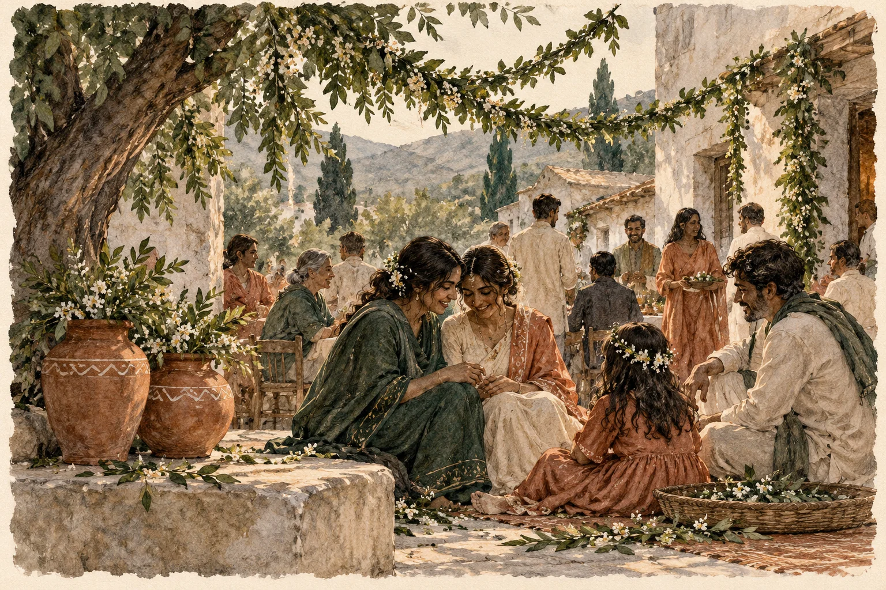

ମୂଳ କବିତା · ଓଡ଼ିଆ
ଯେତେ ପ୍ରେମ୍, ସେତେ ପାପ୍..!?

**
ରାତ୍ ପୁହେଇ ଉତୁରି ଯାଉଥିଲା ଆନ୍ ଋତୁ
ପୁଆଲ୍ ଡିସ୍-ନା (ଶେଜ) ରୁ
ଓସ୍ ପଡ଼ିଥିବା ପଖନା(ପଥର) ଚଟାନ୍ ଉପରେ
ଧୀରେ ପାହା ଥାପି!
ପାଞ୍ଚଫୁଟ୍ ଉଚ୍ଚ ମଚାନ୍ ଉପରେ, ପର୍-ରା (ପୁଆଳ) କୁମ୍ବା
ତଳେ ବନ୍ଧା ହେଇଛନ୍ତି ଗରୁ, କାରା (ମଇଁସି)
ଖରା ଖାଇ ଉଷୁମ୍ ହେବାକୁ
କୁମ୍ବା ଉପରେ ସୁଖେଇଚି ଲେଦ୍-ରା (କନ୍ଥା) ଟେ
ମେଜରିଏନ୍ ର ରଂଗ ଚିକଣ,
ମଜୁରୀ କାମକରୁଥିବା ଅବିହାଡ଼ୀ ଯୁବାଦେହ
ଯେମିତି ସାଇଲୋ ନାଚରେ ମତୁଆଲା ସଞ୍ଜଟିଏ ,
ସଙ୍ଗାତ ସମ୍ପର୍କରୁ ସେ ବାଛି ନେଇଛି ତା ଜୀବନ ସଙ୍ଗୀ,
କବର୍ ପରବକୁ ( November 2nd) ଆସିଥିଲା ଯିଏ,
ସେ କୁଣିଆ ରହିଗଲା ମାସଟେ ପାଖାପାଖି..
ପକ୍ଷୀମାନଙ୍କୁ ବସା ବାନ୍ଧିବା କିଏ ବା ଶିଖାଏ!?
“ ଲୋଟା ମେଁ ପାନି.. ବଡ଼ ସୁନ୍ଦର୍ ଗୁତିଆ,
..ହାମର୍ ମାଝେ…”, ସତରେ କି ସୁନ୍ଦର ସାଇଲୋ ପଦଟେ!
ଆହା, ସେ ମାଟି ଘରଟି
ମହକୁଛି ପ୍ରେମ ଆଉ ଅବାଧ ପ୍ରଣୟର ଆଦିମ ଦିବ୍ୟମହକରେ
“ଜନମ୍ ମରନ୍,
ଛାଗରି (ଛେଳି), ଗାଗରି ( ମାଠିଆ), କି ଧାଙ୍ଗରି (ଝିଅ)..
ଢାପାଇକ୍ ହୋଏକ୍..?” , କହେ ବାପ
“ଜାଡ଼ ରହେକ୍
ମଡ଼ିଆ ଝର୍, କତଉରି ରସ୍ (ଆଖୁ ରସ), ମୁରେଇ(ମୂଳା) ଝୋର୍,
ନୂଆ ଚାଉର୍ ଥାପଡ଼ି ପିଠା, ମିଠା ରୁଟି ମେ..
ପ୍ରଭୁ ପ୍ରାର୍ଥନା, ଜନମ୍ ପରବ (ବଡ଼ ଦିନ),
ଇକ ଦିନ୍ ଛାନଟ୍ ଦେଓ ବ୍ରଦର୍,..
ମାଁ ନାଇଁ,
ମାଏର୍ ରୂପା ମାରା (ମାଳି),
ଚେପା ସୁନା କାନ୍-ଠେପି (କାନ ଫୁଲ) ସାର୍ (ହଳକ),
ଦୁଇ ହାଣ୍ଡି ହଣ୍ଡିଆ, ପାପ୍ ହନନ୍ ଲାଏଗ (ପାଇଁ).. “
ଏତକ ମାଟିରେ ରଖି…ନେହୁରା ହେଲା
ଇସାର୍ ମାଇଲୋ - ମେଜରିଏନ୍ ର ବୁଢ଼ା ବା’ ।
ଝିଅର ବାପ, ମୁହଁ ନାଇଁ ତାର
ସାତସିଆଁ ମଇଳା ପଗଡ଼ିଟି ଯେମିତି ମାଟିରେ ପଡ଼ିଛି,
ବୁଢ଼ାହାଡ଼ ଭାଙ୍ଗି, ଆଣ୍ଠେଇ, ମୁଣ୍ଡିଆ ମାଇଲାରୁ
ତାକୁ କୋଳେଇ ନିଏ ଜୋସେଫ୍ ମହାଲ୍, ମୁଖିଆ ..!
ତା’ ପରେ କଥା ଛିଣ୍ଡିବ, …ମୁର୍ଗି, ସୁଏର୍ ( ଘୁଷୁରୀ), କି ଛାଗରି..!
**
_ଶକୁନ୍ତଳା
କବିତାଗୁଡ଼ିକ ମୂଳ ଭାଷାରେ ରହିଛି। ଭାଷା ବଦଳାଇଲେ ୱେବ୍ସାଇଟ୍ର ପରିଚୟ ଓ ନିର୍ଦ୍ଦେଶ ବଦଳିବ।